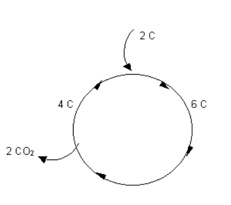
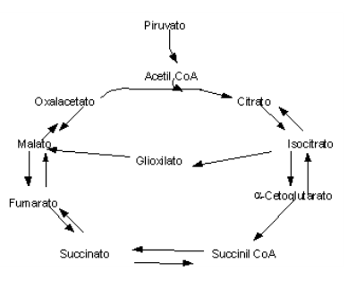

9 Ciclo de Krebs
Objetivos
- Saber a localização distinta do ciclo de Krebs em relação à glicólise;
- Entender a lógica cíclica deste circuito metabólico;
- Saber exemplificar a necessidade de algumas vitaminas do complexo B, tais como B1, B2 e B3 para o correto funcionamento do circuito (coenzimas);
- Compreender e saber exemplificar a natureza anfibólico do ciclo de Krebs;
- Entender a produção de coenzimas de oxi-redução (NADH e FADH2) em suas desidrogenases respectivas;
- Compreender a descarboxilação dupla que ocorre neste circuito;
- Saber exemplificar os controles metabólicos alostérico e covalente envolvidos no circuito;
- Entender como um atalho no circuito pode poupar carbonos da descarboxilação (ciclo do glioxilato);
- Entender a produção de GTP direta no circuito;
- Saber o saldo de coenzimas de oxiredução do circuito;
- Observar como o ciclo de Krebs está interligado a outras rotas metabólicas.
9.1 Introdução
O ciclo de Krebs é uma mistura de redemoinho com ventilador. É um redemoinho pois pode canalizar todo o excesso de compostos metabólicos produzidos pela célula para o seu interior, ao mesmo tempo que comporta-se como um ventilador, na medida em que joga uma série de compostos fabricados em seu interior para outras rotas do metabolismo (experimente jogar alguma coisa num ventilador ligado !).
Essa dupla função faz com que desempenhe um papel central no metabolismo, já que elimina alguns excessos de umas rotas, ao mesmo tempo em que distribui alguns compostos para outras. A metáfora não é em vão. Tanto o redemoinho como o ventilador fazem alusão à imagem de algo girando. E é exatamente assim que o ciclo de Krebs se comporta. Girando, ele pode pegar gordura, aminoácidos ou açúcares, vindos de outras rotas, e transformá-los em outros compostos de interesse à célula no momento, como uréia, ATP, ácido cítrico, etc.
O ciclo de Krebs só ocorre em células que contém mitocôndrias ou cloroplastos. Assim como na glicólise, o ciclo de Krebs, e todas as outras rotas metabólicas existentes em qualquer ser vivo, faz uso das enzimas como operárias na transformação química de seus compostos. Assim, o ciclo de Krebs é formado por cerca de 8 enzimas que transformam sequencialmente um composto em outro. Sequencialmente e ciclicamente, senão por qual motivo o ciclo Krebs se chamaria ciclo ?! Uma rota metabólica cíclica indica que o composto incial formado se regenera ao final do ciclo. No ciclo de Krebs é a mesma coisa, só não existe um composto inicial, assim como não é possível se determinar qual pá do ventilador começou a rodar primeiro.
Quimicamente falando, se olharmos para o ciclo de Krebs, veremos na sequência de reações um composto com 4 carbonos se transformando em outro com 6 carbonos. Como isso é possível, ou seja, como um 4C pode virar um 6C? Ora, só se receber mais 2 carbonos (4C+2C=6C). Acontece que o ciclo é cíclico por definição, o que faz com que esse composto 6C tenha que se transformar novamente em 4C, fechando o ciclo. Neste caso, há a perda de 2 carbonos, que no ciclo de Krebs vão embora na forma de duas moléculas de dióxido de carbono, ou 2 CO2. Durante o ciclo são produzidas também algumas coenzimas especiais (ajudantes de enzimas), as quais podem ser utilizadas pela etapa seguinte do metabolismo intermediário, a cadeia respiratória, para formar uma enorme quantidade de ATP energético para a célula.

9.2 Detalhes
O ciclo de Krebs, ou ciclo do ácido tricarboxílico (TCA), ou ciclo do ácido cítrico, é uma rota cíclica de oxidação de acetil CoA para a produção de metabólitos intermediários de outras vias, como oxalacetato e glutamato, de coenzimas do catabolismo energético (NADH e FADH2) e de ATP. Em eucariotos o ciclo de Krebs ocorre na matriz mitocondrial, ao passo que em procariotos, na membrana citoplasmática. O ciclo de Krebs permite que se produza mais energia a partir da oxidação de compostos já oxidados por outras vias (glicólise, por exemplo).
Como toda oxidação exige um aceptor de elétrons, este ocorre na forma das coenzimas acima, NADH e FADH2, que transferem esses elétrons para a etapa final do metabolismo intermediário, a cadeia respiratória, gerando ATP, por oxidação e transferência final de elétrons ao O2 molecular, produzindo água. Neste sentido, acredita-se que o ciclo de Krebs (Hans Krebs, Nobel de 1953) tenha surgido há 3 bilhões de anos atrás, quando do aumento dos níveis de oxigênio atmosférico.
A lógica da via constitui uma condensação de C2 e C4 foramando um C6, com duas descarboxilações sucedentes que regeneram o composto C4. Desta forma, a via figura-se cíclica. Neste percurso são produzidos 3 NADH, 1 FADH2, e 1 GTP. São 8 reações principais que se inicam com a conversão adicional de piruvato em acetil CoA, uma molécula de importância fundamental em todo o mapa de reações metabólicas, já que figura no metabolismo de ácidos graxos, carboidratos, proteínas e ácidos nucléicos. Esta reação é catalizada pela piruvato desidrogenase, produz 1 NADH, e envolve 5 coenzimas, a saber: TTP (pirofosfato de tiamina, um derivado da vitamina B1), NAD+, FAD, CoA (derivado da vitamina ácido pantotênico), e ácido lipóico.
A piruvato desidrogenase é um complexo multi-enzimático formado por 60 cadeias polipeptídicas com funções de descarboxilação (que requer a vitamina B1), transcetilação (que transfere o –SH, grupo tiol da lipoamida ligada covalentemente à transcetilase, ao CoA, coenzima A), e desidrogenação (que restaura as formas oxidadas de lipoato e FAD, e produz NADH). A piruvato desidrogenase é inibida por NADH e acetil CoA, que sinalizam à uma quinase sua fosforilação e consequente inativação. A segunda etapa do ciclo envolve uma condensação aldólica da acetil CoA produzida (C2) com oxalacetato (C4), formando citrato (C6), pela citrato sintase. O citrato assim produzido, se em excesso, pode inibiir a fosfofrutoquinase-1 (PFK-1) da glicólise, ou ativar a síntese de ácidos graxos (pela acetil CoA carboxilase). A enzima é inibida por ATP, NADH, succinil CoA, ou acil CoA graxa (dos ácidos graxos), compostos relacionados à saciedade energética.
Em seguida ocorre uma isomerização do citrato em isocitrato pela aconitase, e duas reações consecutivas de descarboxilação e desidrogenação, ambas liberando CO2 e produzindo NADH. A primeira é catalisada pela isocitrato desidrogenase, e a segunda pela \(\alpha\)-cetoglutarato desidrogenase, esta última operando com as mesmas 5 coenzimas da piruvato desidrogenase. O produto intermediário é o succinil CoA, um composto de alta energia, que na reação seguinte sofre clivagem pela succinil tioquinase, liberando GTP. Este processo é denominado “fosforilação ao nível do substrato”, semelhante à produção de ATP na glicólise, já que não ocorre na cadeia respiratória (fosforilação oxidativa). Este GTP pode então se converter em ATP (ação da nucleosídio difosfato quinase).
Uma terceira desidrogenação libera FADH2 pela succinato desidrogenase, formando fumarato que se hidrata em malato, seguindo-se a última desidrogenação que produz NADH, e converte o malato em oxalacetato, regenerando o composto.
9.3 Aplicação
A doença mais comum associada ao ciclo de Krebs é o béribéri, causada por deficiência de vitamina B1, a qual pode ser encontrada em cerais, ovos, carne e vegetais verdes. A vitamina B1, contudo, pode estar indisponibilizada em alimentos levados à alta temperatura, ou na intoxicação alcoólica.
No quadro etanólico do “delirius tremens” é administrado vitamina B1 intravenosamente. Neste caso, do qual figura a Síndrome de Wernicke-Korssakoff, ocorre um comprometimento cardíaco e neurológico que determina fraqueza muscular, palpitação, edema, formigamente e psicose de confabulação. Outra intoxicação costuma ocorrer por inibição enzimática do fluoreto na aconitase, ou, mais especificamente, pelo fluoroacetato presente na erva-de-rato (ou cafezinho, Palicourea marcgravii), o qual se converte em fluorocitrato, inibindo a aconitase e paralisando o ciclo. A intoxicação por cafezinho constitui a de maior abrangência geográfica nos rebanhos bovinos brasileiros. Os sintomas do animal vão desde tremores e taquicardia, até convulsão e morte, essa por acumulação da toxina.
Uma forma mais branda de intervenção no ciclo de Krebs se dá pelo uso de fármacos dietéticos a base de hidroxicitrato. Este composto, extraído da Garcinia, simula o ácido cítrico, inibindo a citrato liase e reduzindo o citrato intracelular. A queda nos teores de citrato sinalizam o organismo para o aumento na oxidação de carboidratos e ácidos graxos. Finalmente, outra inibição de importância clínica se dá com o arsênico, o qual se combina com o ácido lipóico, inativando a piruvato desidrogenase e a \(\alpha\)-cetoglutarato desidrogenase.
Arsenitos orgânicos eram muito comuns na posologia de tônicos no século XIX, acreditando-se ter intoxicados Charles Darwin, que sofria de sintomas típicos da intoxicação, como náuseas, eczemas, gota e dor de cabeça. A morte do estadista Napoleão Bonaparte também é atribuída ao envenenamento intencional pelo arsênico, ou acidental por este, já que era comum na época o uso de tintas de parede contendo arsenitos. Estes produzem compostos voláteis pelo metabolismo fúngico, e que identificados em mechas de cabelo do estadista.
Como o ciclo de Krebs é uma rota intermediária para a oxidação de carboidratos e gorduras, servindo como uma drenagem catabólica destes, pode ser manipulado para aumentar a degradação dos mesmos, visando a redução de gordura. Isto tem sido feito de forma perigosa pela administração oral agonistas \(\beta\)-adrenérgicos, embora de larga escala em animais de produção (bovinos, suínos e ovinos).
Neurotransmissores simpáticos, como adrenalina e noradrenalina, têm a propriedade de estimular a glicólise e a lipólise no tecido adiposo, liberando ácidos graxos livres. Complementarmente, ainda induzem a retenção de nitrogênio pela musculatura esquelética. Sendo assim, análogos sintéticos de catecolaminas (adrenalina e noradrenalina), como o clenbuterol, têm demonstrado uma diminuição da deposição de gorduras e aumento na síntese de proteínas em rebanhos, aumentando a massa muscular destes.
